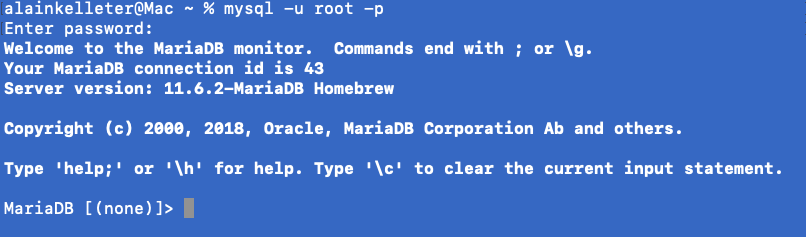

Utiliser le terminal pour créer une base de données et une table. C'est une bonne pratique pour comprendre comment fonctionne un SGBD. Cela permet de mieux appréhender les outils graphiques que sont les interfaces utilisateurs pour les SGBD et cela permet également de comprendre les commandes SQL qui sont à la base de la gestion des bases de données.
Pour se connecter au serveur SGBD, il suffit de taper la commande suivante dans le terminal :
Cette commande permet de se connecter au serveur SGBD en tant qu'utilisateur root et de demander le mot de passe associé à cet utilisateur. Une fois le mot de passe saisi, vous devriez voir un message de bienvenue de la part du serveur SGBD.
Si vous devez vous connecter sur un port différent de celui par défaut (3306), vous pouvez ajouter l'option --port ou -P suivi du numéro du port. Par exemple, pour se connecter sur le port 3307, vous pouvez utiliser la commande suivante :
Pour créer une nouvelle base de données, utilisez la commande suivante :
Par exemple, pour créer une base de données nommée magasin :
Vous pouvez (...devriez) spécifier le jeu de caractères et la collation lors de la création :
Cela garantit que la base utilise le bon encodage pour stocker les caractères spéciaux et optimise l'ordre de tri.
Vous pouvez vérifier si la base a bien été créée avec :
Le jeu de caractères et la collation par défaut de MariaDB sont définis dans le fichier de configuration my.cnf (ou mariadb.cnf selon le système). Pour les configurer globalement, modifiez ou ajoutez les lignes suivantes sous la section [mysqld] :
Pour vérifier si la base de données a bien été créée, vous pouvez utiliser la commande suivante :
Cette commande permet d'afficher la liste des bases de données présentes sur le serveur SGBD.